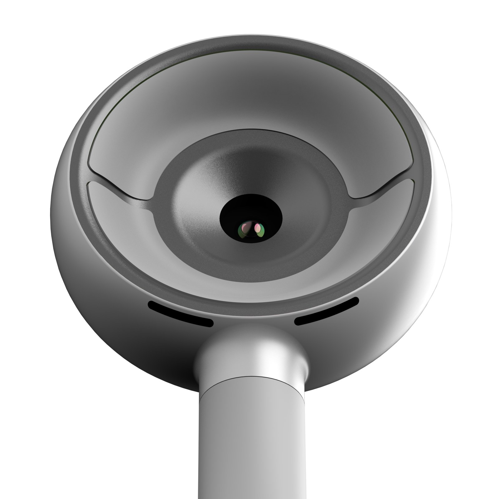
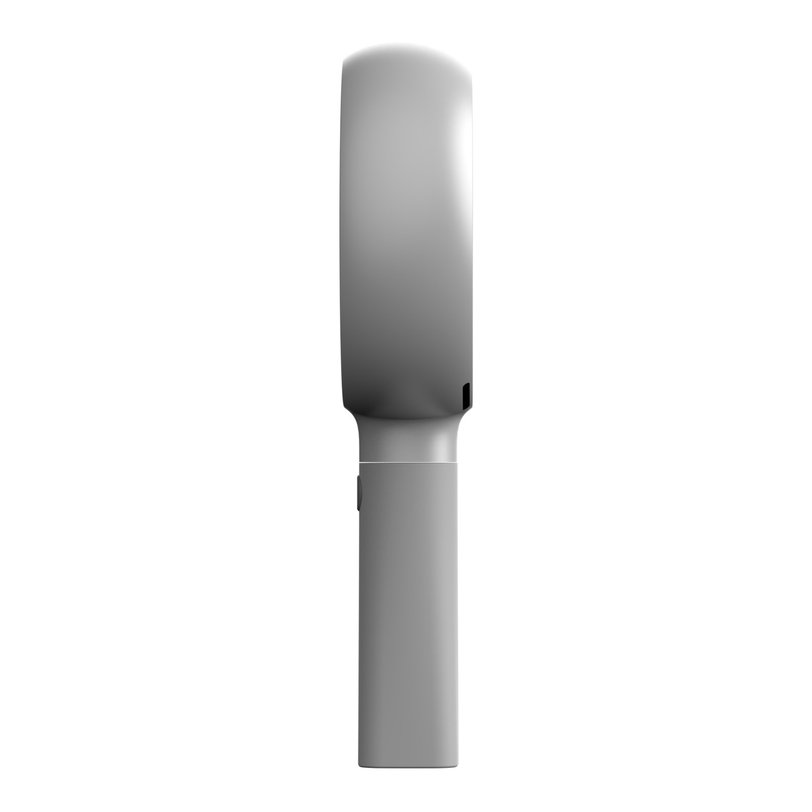
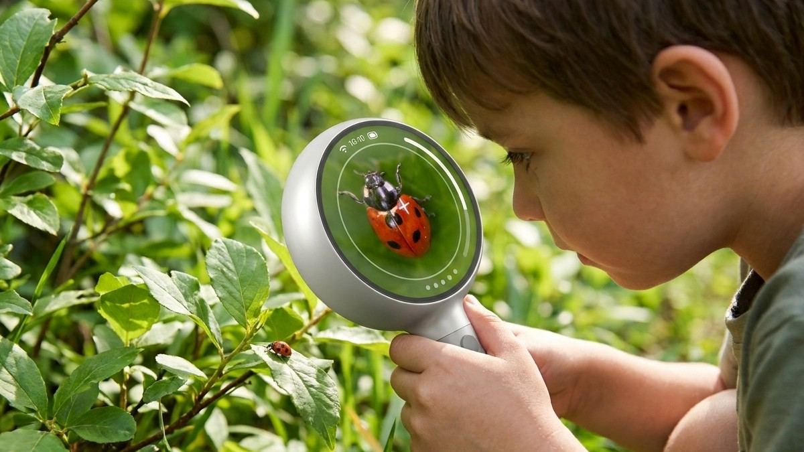

Concept Overview
관찰하며 스스로 배우는
습관을 만드는 기기.
소록(Sorok)은 관찰을 통해 스스로 학습하는 습관을 길러주는 스마트 기기입니다. 아이들이 점차 자연과 멀어지고 스마트폰에 중독되어 가는 오늘날, 소록은 스크린 타임(소셜 미디어·게임 시간)을 ‘그린 타임(자연 교감 시간)’으로 바꾸어 주는 건강한 대안이 됩니다.
Design & Features
기존의 디지털 기기와 달리, 소록은 아동 중심의 폼팩터에 물리적 자연 탐색과 스마트 기술을 결합했습니다.
AI Lens
직관적인 AI 렌즈
야외에서 마주치는 다양한 식물과 곤충을 실시간으로 인식합니다.
Ergonomics
인체공학적 인터페이스
아이들의 작은 손에 꼭 맞게 설계된 바디, 조작이 간편한 원버튼 다이얼 시스템, 세밀한 관찰을 돕는 내장형 접사 카메라를 탑재했습니다.
Gamification
게이미피케이션 학습
단순한 사진 촬영을 넘어 학습 과정을 놀이처럼 구성해, 아이들이 자연을 스캔하고 이해하며 자신만의 생태계 도감에 기록하도록 유도합니다.



User Experience & Ecosystem
필드에서 도감으로, 도감에서 일상으로.
탐험에서 끝나지 않고, 발견한 것을 기록하고 나누는 사후 학습으로 이어집니다.

-
01
필드로 나가기
아이들이 소록을 들고 자연 속 필드로 나갑니다.
-
02
AI 렌즈로 스캔
AI 카메라 렌즈로 식물과 곤충 같은 자연 요소를 스캔합니다.
-
03
나만의 도감 완성
수집된 데이터가 태블릿·스마트폰 전용 앱과 동기화되어 ‘나만의 디지털 자연 관찰 도감’이 완성됩니다.
-
04
스케치하고 나누기
발견한 것을 직접 스케치하고 부모·친구와 지식을 나누며 호기심을 이어갑니다.
UI 체험
직접 넘겨보세요.
스캔부터 생태 정보까지, SOROK의 화면 흐름을 따라가 보세요.
화면 흐름 · 01 / 04
다른 작품